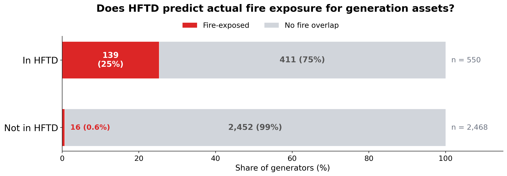
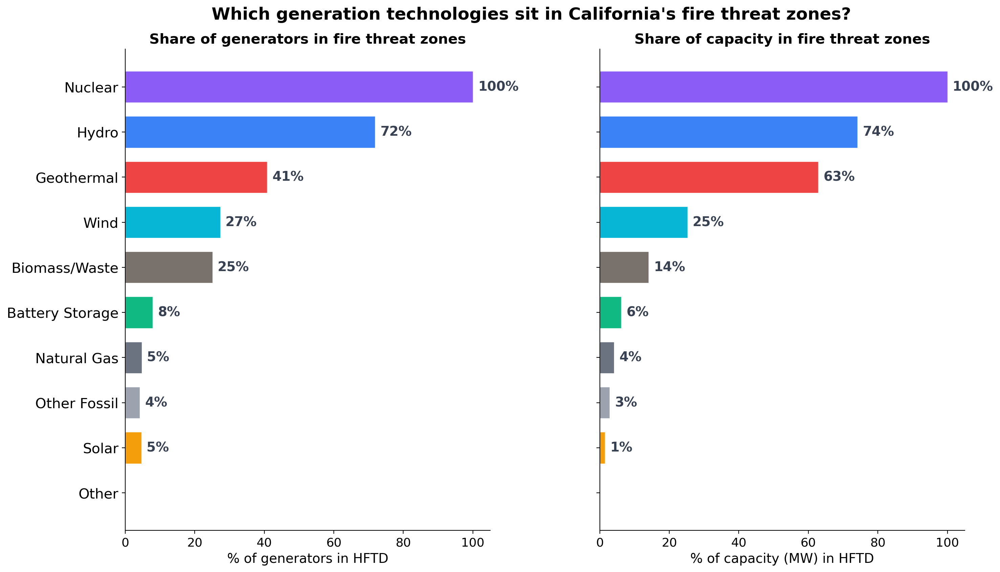
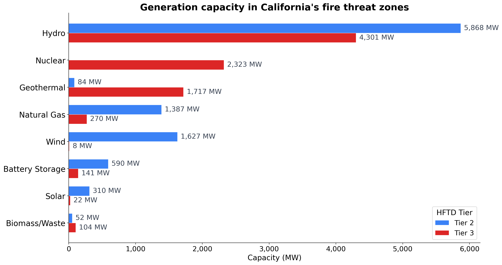
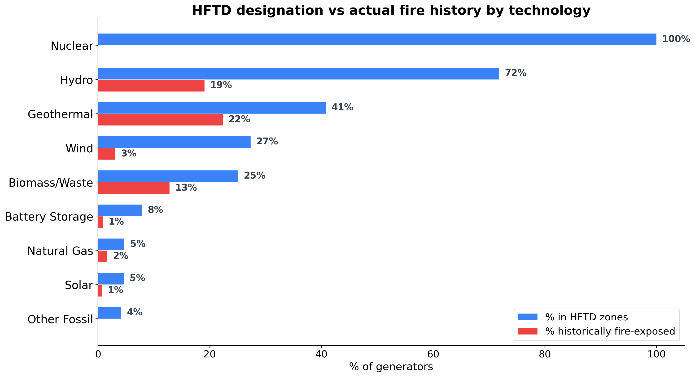
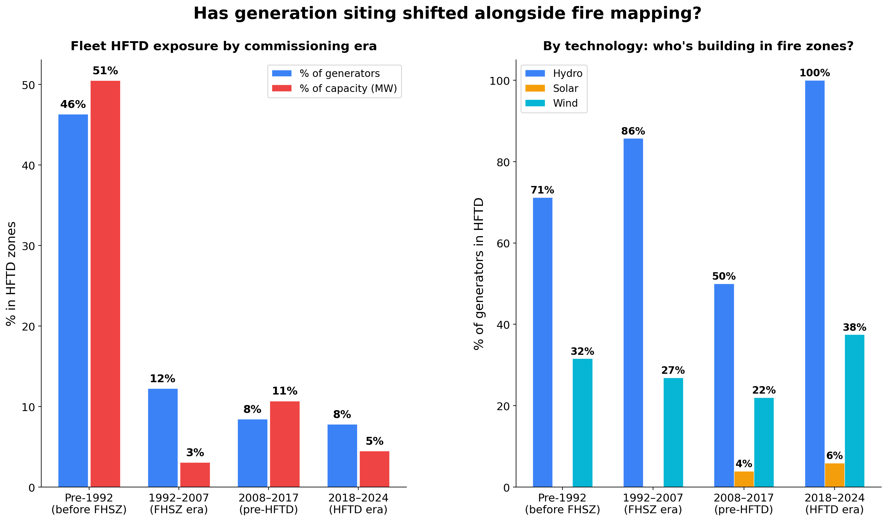
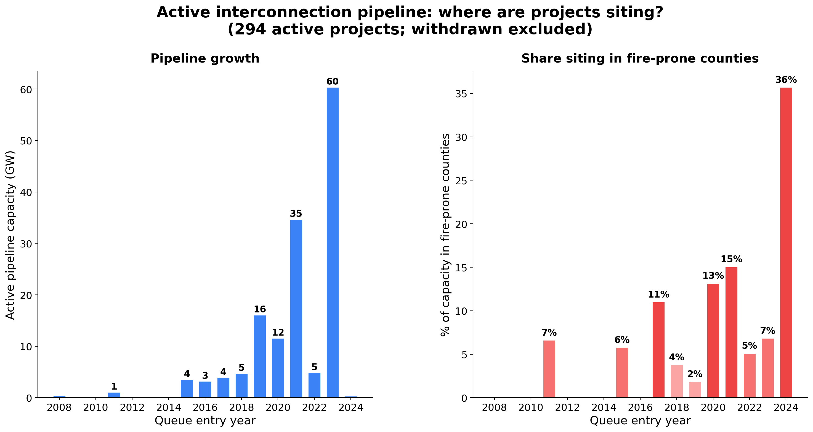
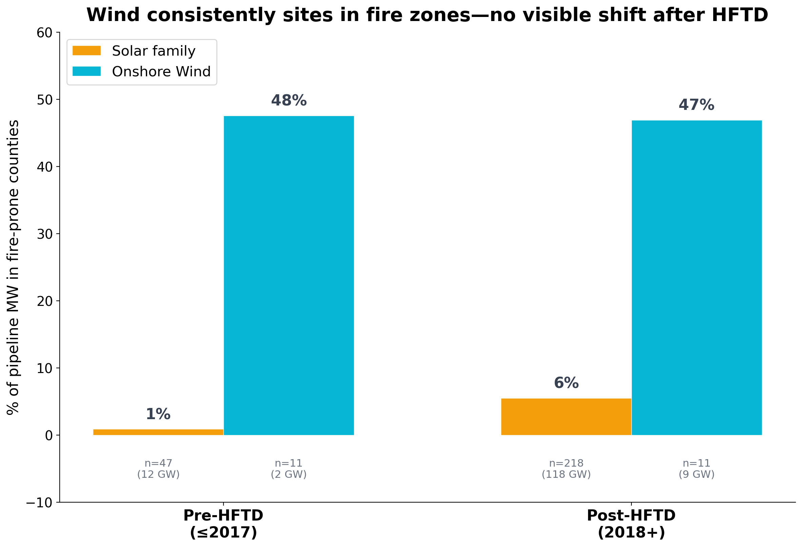
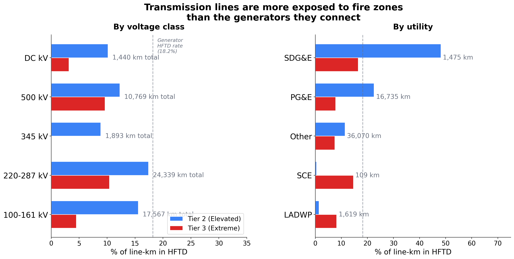
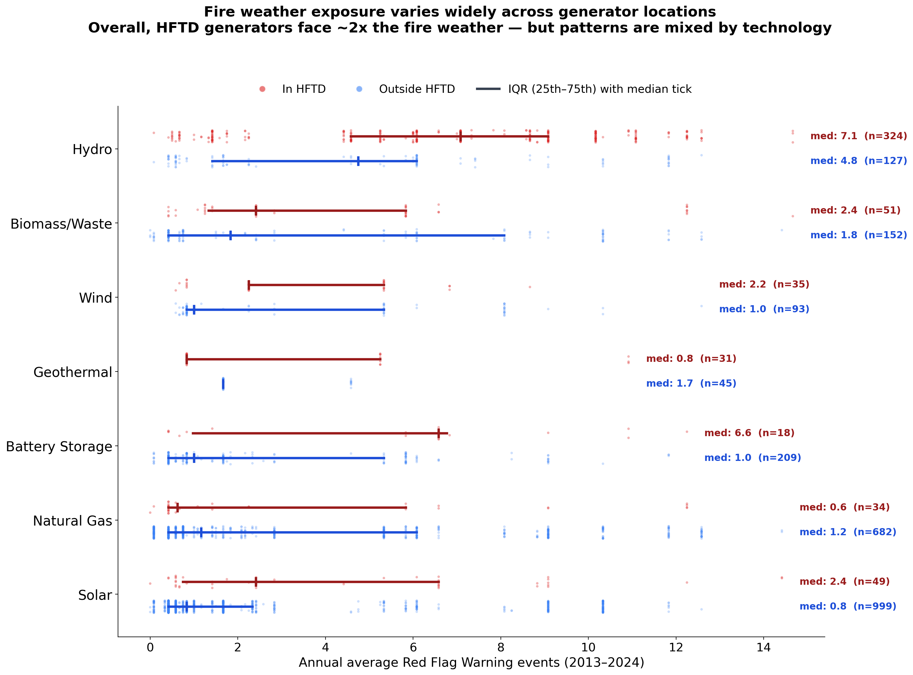

Understanding the Fire Risk in California's Power Grid: Generation
Part 1 of a series on California's energy grid and wildfire risk
California's fire maps: a quick guide
California has two main fire-risk mapping systems, run by different agencies for different purposes.
Fire Hazard Severity Zones (FHSZ), maintained by CAL FIRE, classify land by how severe wildfire behavior is likely to be—based on fuel type, slope, and fire weather. FHSZ was created after the 1991 Oakland Hills fire (AB 337, 1992) and determines building codes and defensible space requirements (Public Resources Code §4201-4204, Government Code §51175-51189). It applies to all development, not just utilities. In 2025, CAL FIRE released updated FHSZ maps reflecting current climate conditions.
High Fire Threat Districts (HFTD), maintained by the CPUC, identify areas with elevated risk of utility-caused wildfire ignition. HFTD was born from the catastrophic October 2007 San Diego wildfires—the Witch, Guejito, and Rice fires, sparked by powerline contact during Santa Ana winds, burned roughly 324 square miles. The CPUC opened Rulemaking R.08-11-005 in response, eventually adopting the HFTD tier system in Decision D.17-12-024 (December 2017). The tiers:
- Tier 1: Tree-mortality hazard zones (based on US Forest Service/CAL FIRE mapping)
- Tier 2 (Elevated): Areas with elevated risk of utility-associated wildfire
- Tier 3 (Extreme): Areas with extreme risk, subject to the most stringent regulations
The HFTD has grown substantially—from roughly 31,000 to 70,000 square miles, now covering about 44% of California's land area.
(You may also encounter the term HFRA—High Fire Risk Area. This is Southern California Edison's internal designation, a superset of HFTD that includes additional areas SCE considers fire-prone based on its own operating history. It's not a state regulatory classification.)
What the regulations require—and where generation falls through the gap
HFTD designation triggers specific requirements for electric utilities: stricter vegetation clearance standards (GO 95 Rule 35), faster correction timelines for fire hazards (12 months in Tier 2, 6 months in Tier 3), covered conductor or undergrounding programs (SB 884, 2022), and authority to conduct Public Safety Power Shutoffs when extreme fire weather threatens energized lines.
But these rules are designed for transmission and distribution—overhead lines, poles, conductors. The statutory language (PUC §8386, originally enacted via SB 1028 in 2016 and later amended by SB 901 in 2018) requires utilities to "construct, maintain, and operate its electrical lines and equipment in a manner that will minimize the risk of catastrophic wildfire." The focus is ignition prevention from T&D infrastructure.
Generation siting is governed separately. The California Energy Commission licenses thermal power plants ≥50 MW (and since AB 205 in 2022, solar PV and onshore wind ≥50 MW, storage ≥200 MWh, and certain other qualifying facilities can opt in to CEC jurisdiction). The CEC's review includes a wildfire assessment under CEQA, but there is no categorical prohibition on siting generation in HFTD or FHSZ zones. Smaller projects go through local permitting, where fire risk is evaluated on a case-by-case basis.
The result: HFTD comprehensively regulates the wires but not the generators connected to them. No generation-specific fire risk siting standard exists at the state level. HFTD is the most prominent fire-risk layer in California energy regulation, but it wasn't built for generation—and nothing else has been built to fill that gap.
The question this post explores
What happens when looking at California's generation fleet through the lens of fire risk? HFTD answers a particular question: where might utility equipment start a fire? For the 102 GW of generation capacity that powers the state, a different question also matters: where might fire reach a power plant?
These aren't the same thing, and nobody claims they are. But HFTD is the fire-risk layer that exists. So what does it tell us about generation, and where does the picture get incomplete?
Methodology
I overlaid every operable generator in California (3,018 generators at 1,790 plants from EIA-860, 2024) onto the CPUC's HFTD Tier 2 and Tier 3 zones. Then I compared those designations against 25 years of actual fire history—every fire perimeter ≥100 acres recorded by CAL FIRE FRAP from 2000 through 2024 (3,069 fires).
A methodological note: the unit of analysis is the generator (EIA-860 generator_id). A single plant may house multiple generators; plant-level aggregation yields 1,790 plants with an 18.0% HFTD rate (323 plants), close to the generator-level 18.2% because generators at the same plant share coordinates. The plant-level fire-perimeter overlap rate is lower (4.0% vs 5.1%) because multi-generator hydro complexes—where fire exposure is concentrated—count as one plant. The analysis treats each generator as a point (its lat/lon coordinate from EIA-860) and ask whether that point falls inside an HFTD zone or a historical fire perimeter. This is a simplification—a utility-scale solar farm can cover a square mile, and a hydro system spans a river canyon. Point-in-polygon analysis will miss near-misses and undercount exposure for spatially extended facilities. I discuss what a more complete spatial analysis would look like at the end.
What HFTD tells us about generation
18.2% of California's generators sit in HFTD zones (550 of 3,018), representing 18,820 MW of the state's 102 GW total capacity. That's roughly one in five generators.
When checking which generators have coordinates that fall inside a recorded fire perimeter (≥100 acres, 2000-2024), only 5.1% have fire-perimeter overlap (155 generators, 5,807 MW). I use "fire-exposed" throughout as shorthand for this overlap—it means the generator's EIA-860 coordinates fall inside a CAL FIRE perimeter, not that the facility sustained damage.
The comparison between these two numbers is informative:

Figure 1. HFTD designation vs. historical fire-perimeter overlap for California's 3,018 operable generators. HFTD designations from CPUC HFTD Tier 2/3 map (2024). Fire perimeters from CAL FIRE FRAP (fires ≥100 acres, 2000–2024). Generator locations from EIA-860 (2024).
HFTD captures 89.7% of generators that are fire-exposed—it rarely misses one. But only 25.3% of HFTD-designated generators have had a recorded fire perimeter reach their coordinates in 25 years. The remaining 74.7% sit in areas that HFTD designates as fire-prone but where no ≥100-acre fire perimeter has been recorded since 2000.
This pattern—broad coverage, conservative designation—is what you'd expect from a regulatory map designed for infrastructure safety. HFTD is meant to cast a wide net for ignition risk, not to precisely predict fire arrival at specific assets.
Where the picture gets more interesting is when I break it down by technology.
The technology story
Not all generation technologies face the same fire exposure. The differences are stark:

Figure 2. HFTD exposure by generation technology. Left panel: share of generators in HFTD Tier 2/3 zones. Right panel: share of nameplate capacity (MW) in HFTD. Technologies sorted by capacity exposure. Sources: EIA-860 (2024) for generator locations and capacity; CPUC HFTD map (2024) for fire threat designation.
Table 1. HFTD and fire exposure rates by technology. "% historically fire-exposed" = share of generators whose EIA-860 coordinates fall inside a CAL FIRE perimeter (≥100 acres, 2000–2024). Sources: EIA-860 (2024), CPUC HFTD (2024), CAL FIRE FRAP (2000–2024).
| Technology | % generators in HFTD | % capacity in HFTD | % historically fire-exposed |
|---|---|---|---|
| Nuclear | 100% | 100% | 0% |
| Hydro | 72% | 74% | 19% |
| Geothermal | 41% | 63% | 22% |
| Wind | 27% | 25% | 3% |
| Biomass/Waste | 25% | 14% | 13% |
| Battery Storage | 8% | 6% | 1% |
| Natural Gas | 5% | 4% | 2% |
| Solar | 5% | 1% | 1% |
Three patterns stand out.
Nuclear: 100% in HFTD, 0% fire history
Both of Diablo Canyon's reactors sit in HFTD Tier 3—that's 2,323 MW, California's last operating nuclear plant. The HFTD designation reflects the chaparral-covered coastal hills surrounding the site. But in 25 years of fire perimeter data, no fire has reached the plant.
This illustrates how HFTD and generation-asset risk can diverge. HFTD is mapping vegetation-driven fire potential—and the hills around Diablo Canyon do have that potential. But the plant itself is a hardened concrete-and-steel facility with extensive defensible space in a coastal microclimate. The fire risk to the plant and the fire risk from nearby vegetation are different things, and HFTD only maps the latter.
Hydro: where fire risk is real and consequential
72% of California's hydroelectric generators (74% of hydro capacity—over 10 GW) sit in HFTD zones. And unlike nuclear, the fire exposure is real: 19% of hydro generators have been inside a fire perimeter since 2000, totaling 3,253 MW of fire-exposed capacity.
This sounds counterintuitive. How does fire threaten water? The answer is that it doesn't—at least not the dam itself. Dams are concrete and steel. Turbines sit inside reinforced powerhouses, often partially underground. Fire doesn't melt a dam.
What fire does threaten is everything around the dam that makes it useful:
Access. Mountain hydro plants sit at the end of narrow forest roads. When fire cuts those roads, operators can't reach the facility to maintain or repair it. After the 2020 Creek Fire, SCE mounted its largest-ever restoration effort at Big Creek, deploying over 2,000 workers to restore access and repair infrastructure.
Grid connection. The transmission lines connecting remote hydro plants to the grid run through the same fire-prone terrain. Even when the plant survives intact, if the wooden poles and overhead conductors linking it to the grid burn, the plant is stranded—generating capacity exists but can't deliver power. (This becomes a central theme in Part 2 of this series.)
Watershed health. Post-fire erosion dumps massive sediment loads into reservoirs, reducing storage capacity and clogging intake structures. This isn't an acute emergency—it's a slow-motion, multi-year degradation. The 2013 Rim Fire burned through the Hetch Hetchy watershed that supplies San Francisco's drinking water, raising concerns about post-fire sedimentation and water quality.
Precautionary shutdown. Even before fire reaches a plant, utilities may shut down generation as a safety measure—either because crews must evacuate or because connecting transmission lines have been de-energized.
The result is that fire doesn't destroy hydro plants—it disables them, temporarily but repeatedly, at exactly the wrong moments.
The data: California's biggest fires have hit its biggest hydro systems
The overlay shows that many of California's largest recent wildfires have intersected hydroelectric generation:
Table 2. Major California wildfires intersecting hydroelectric generation. Plants identified by spatial overlay of EIA-860 generator coordinates onto CAL FIRE FRAP perimeters (≥100 acres, 2000–2024). Capacity from EIA-860 (2024).
| Fire | Year | Hydro plants hit | Capacity (MW) |
|---|---|---|---|
| Creek | 2020 | Big Creek 1, 2, 2A, 3, 8, Mammoth Pool, J.S. Eastwood | 904 |
| King | 2014 | Camino, El Dorado, Jaybird | 339 |
| Yuba | 2009 | Colgate (2 generators) | 315 |
| Chips | 2012 | Belden, Caribou 1, Caribou 2, Oak Flat | 311 |
| Rim | 2013 | Dion R. Holm, R.C. Kirkwood | 308 |
| Dixie | 2021 | Belden, Bucks Creek, Caribou 2, Oak Flat | 303 |
| Old | 2003 | Devil Canyon (4 generators) | 276 |
| Camp | 2018 | Poe, Cresta | 217 |
| Carr | 2018 | Spring Creek, Whiskeytown | 184 |
The Creek Fire is the most striking case. SCE's Big Creek system—a chain of reservoirs and powerhouses stepping down the western Sierra slope—has 1,009 MW of total capacity. The Creek Fire perimeter engulfed plants representing 904 MW of that system—90% of the complex. This is one of California's largest concentrations of dispatchable clean energy, and a single fire event put nearly all of it inside a fire perimeter.
Belden powerhouse in Plumas County appears in the fire perimeter data for three separate fires: the Storrie Fire (2000), the Chips Fire (2012), and the Dixie Fire (2021). At 118 MW, it is one of the most repeatedly fire-exposed generators in the state. (The Chips row in Table 2 reflects all generators whose coordinates fall within the 2012 Chips Fire perimeter; several of those plants were later also inside the 2021 Dixie Fire perimeter.)
One important finding: every fire-exposed hydro plant in the data is also designated HFTD. Zero false negatives. For hydro specifically, HFTD is a reliable indicator of fire exposure. The divergence between HFTD and actual fire history shows up for other technologies—nuclear, gas, batteries—where HFTD designates assets that haven't experienced fire. For hydro, the map and the history agree.
Solar and gas: largely outside fire zones
Solar (5% in HFTD, 1% of capacity) and natural gas (5% in HFTD, 4% of capacity) are overwhelmingly sited in locations with low fire exposure—solar in the Central Valley and desert, gas near load centers on the coast and in the LA Basin. Battery storage follows a similar pattern.
This is a feature of California's geography: the places with the best solar resource (flat, dry, treeless) and the places where gas plants were built (near population centers) happen to be the places with the lowest wildfire risk. The clean energy buildout is largely happening in fire-safe locations, while the legacy hydro system sits in fire-prone terrain.

Figure 3. Installed generation capacity (MW) in HFTD fire threat zones, by technology and tier. Tier 2 = elevated fire threat; Tier 3 = extreme fire threat. Technologies sorted by total fire-zone capacity. Sources: EIA-860 (2024) for capacity; CPUC HFTD map (2024) for tier designation.
How well does HFTD track actual fire exposure? It depends on the technology.
The scatter below plots each technology's HFTD designation rate against its actual fire exposure rate. Technologies near the diagonal have HFTD designations that align with their fire history; technologies far below it have HFTD designations that substantially exceed their actual fire exposure.

Figure 4. HFTD designation rate vs. actual fire-perimeter exposure rate by technology. Blue bars show share of generators in HFTD Tier 2/3; red bars show share with historical fire-perimeter overlap (2000–2024). The gap between bars reveals where HFTD designation exceeds observed fire exposure. Sources: EIA-860 (2024), CPUC HFTD (2024), CAL FIRE FRAP (2000–2024).
Most technologies fall below the diagonal—HFTD designation rates exceed historical fire exposure rates. This isn't a problem with HFTD; it's a consequence of applying a map designed for one purpose (ignition risk from distribution infrastructure) to a different question (fire exposure at generation sites).
The technologies closest to the diagonal—geothermal and hydro—are the ones where HFTD designation most closely predicts actual fire exposure. The technologies farthest below—nuclear, wind, gas—are where the gap between HFTD designation and actual fire experience is largest.
Has siting shifted alongside fire mapping?
The HFTD was adopted in 2017. The FHSZ dates to 1992. Have generation siting patterns changed in response?
I added operating year (from EIA-860) to every generator and grouped the fleet into four eras aligned with fire policy milestones:

Figure 5. Share of generators in HFTD zones by commissioning era. Left panel: overall fleet HFTD rate (% of generators and % of capacity). Right panel: HFTD rate for three key technologies—Hydro, Solar, and Wind—showing how the technology mix, not fire policy, drives the trend. Eras aligned with fire policy milestones: FHSZ (1992), HFTD (2017). Sources: EIA-860 (2024) for generator locations, capacity, and operating year; CPUC HFTD (2024).
Table 3. Fleet composition and HFTD exposure by commissioning era. Sources: EIA-860 (2024) for generator count, capacity, and operating year; CPUC HFTD (2024) for fire threat designation.
| Era | Generators | Capacity | % in HFTD | % of MW in HFTD |
|---|---|---|---|---|
| Pre-1992 (before FHSZ) | 749 | 28,112 MW | 46% | 51% |
| 1992-2007 (FHSZ era) | 407 | 20,824 MW | 12% | 3% |
| 2008-2017 (post-SD fires, pre-HFTD) | 1,109 | 25,340 MW | 9% | 11% |
| 2018-2024 (HFTD era) | 753 | 27,700 MW | 8% | 5% |
The share of new generation in HFTD zones dropped dramatically—from 46% before 1992 to 8% in the HFTD era. But this isn't a fire policy success story. It's a technology transition story.
The pre-1992 fleet is dominated by hydro (mountain canyons) and nuclear (coastal hills)—both in fire terrain for geological and hydrological reasons. The 1992-2007 fleet is 93% natural gas—built near urban load centers, which happen to be fire-safe. The 2018-2024 fleet is 90% solar and batteries—built in the Central Valley and desert, where the solar resource is, which also happens to be fire-safe.
The geography of California's energy transition is incidentally moving generation away from fire zones. Solar resource maps and fire risk maps are near-inverses of each other: the flat, dry, treeless terrain that's ideal for solar is also terrain that rarely burns.
But when resource geography pushes toward fire zones, siting doesn't avoid them. Wind is the test case. Of the 24 wind generators commissioned in the HFTD era (2018-2024), 9 (37.5%) are in HFTD zones—the highest rate of any technology in this era. The small sample size warrants caution, but the pattern is consistent with the fleet history: good wind sites in California are on ridgelines and mountain passes, which is also fire terrain. In the active interconnection pipeline, the pattern is similar: of 11 post-2018 wind projects still progressing, 46.9% are in fire-prone counties. In this sample, there is no clear shift in wind siting patterns following HFTD adoption—though the small sample size limits what can be concluded.
The pipeline tells the same story
Of the 1,485 California projects that have entered the LBNL interconnection queue, 70% have withdrawn. This is not unusual—interconnection queues nationally have high attrition rates, often exceeding 70%. Projects withdraw for many reasons: transmission upgrade costs that exceed project economics, permitting delays, changes in power purchase agreement markets, or simply speculative applications that were never fully financed. The queue functions as much as a land-claim mechanism as a construction pipeline, and most entries never reach construction.
Because of this, analyzing the full queue as "the pipeline" would be misleading—it would include over a thousand projects that will never be built. I focus on the 294 active projects (147 GW) that are still progressing through the queue. (Operational projects are already captured in the fleet analysis above. The queue data has county but not precise coordinates, so this comparison is at county resolution.)
I classify a county as "fire-prone" if at least 25% of its existing operable generators fall within HFTD zones—a proxy based on the spatial distribution of the current fleet, not an official fire-risk classification. By this measure, 25 of California's 55 counties with generation qualify.

Figure 6. Active interconnection pipeline by queue entry year. Left panel: total pipeline capacity (GW). Right panel: share of capacity in fire-prone counties (counties where ≥25% of existing operable generators are in HFTD). 294 active projects; withdrawn projects excluded. Source: LBNL Interconnection Queue Dataset (through 2024); fire-prone county classification derived from EIA-860 (2024) and CPUC HFTD (2024).
One notable pattern in the withdrawal data: projects in fire-prone counties withdraw at a modestly higher rate (79% vs 69%). This could reflect higher permitting costs, environmental review complexity, or community opposition in fire-prone areas—but the difference is modest and the sample is too small to draw firm conclusions about whether fire exposure specifically contributes to attrition.
The divergence between wind and solar is stark. Splitting the active pipeline into pre-HFTD (queued ≤2017) and post-HFTD (queued 2018+) projects:

Figure 7. Wind vs. Solar family (Solar + Solar+Storage) fire-county exposure in the active interconnection pipeline, split by HFTD adoption (pre-2018 vs. 2018+). Bars show % of pipeline MW in fire-prone counties. Sample sizes and total capacity shown below each bar. Wind: n=22 total (11 per period). Source: LBNL Interconnection Queue Dataset (through 2024); fire-prone county classification derived from EIA-860 (2024) and CPUC HFTD (2024).
47% of wind pipeline capacity sits in fire-prone counties, and this rate is similar before and after HFTD adoption (48% pre vs 47% post). Solar stays below 6% in both periods. The wind sample is small (22 projects total, 11 in each period), so this comparison is suggestive rather than conclusive—but the pattern is consistent with the fleet data showing wind's persistent presence in fire-prone terrain.
The pipeline's overall low fire-county share reflects the dominance of solar and storage. Wind projects continue to site where wind resources are strongest, which in California means ridgelines and mountain passes that are also fire terrain. The overall shift away from fire zones appears to be a byproduct of the solar/storage boom rather than a response to fire-risk regulation.
Where are the fire-exposed assets?
Figure 8. Interactive map of California's 3,018 operable generators by HFTD tier (gray = None, orange = Tier 2, red = Tier 3). Overlay layers include fire perimeters (2000–2024, CAL FIRE FRAP) and 2,132 high-voltage transmission lines colored by HFTD exposure (HIFLD national dataset, cross-referenced with CPUC HFTD). Circle size proportional to nameplate capacity. Click any generator for plant name, technology, capacity, HFTD tier, and fire exposure status. Toggle layers in upper right. Sources: EIA-860 (2024), CPUC HFTD (2024), CAL FIRE FRAP (2000–2024), HIFLD (2024).
The map shows a clear geographic pattern: HFTD-designated generators (orange and red circles) cluster along the Sierra Nevada foothills, the North Coast ranges, and Southern California's mountain passes. The state's solar buildout (clusters of gray circles in the Central Valley and desert southeast) sits almost entirely outside fire zones. Toggle on transmission lines to see how grid corridors run through fire-scarred terrain.
The large red circle near the central coast is Diablo Canyon. The dense clusters of orange circles in the northern Sierra are hydroelectric facilities—PG&E's mountain hydro system.
Beyond the map: operational fire risk
The analysis so far treats each generator as an island—in HFTD or not, fire-overlapped or not. But generators don't operate in isolation. They connect to the grid through transmission lines that may themselves run through fire zones. And they operate under weather conditions that HFTD's static map cannot capture. Two additional analyses bring these dimensions in.
Transmission corridors and fire zones
A generator's fire risk isn't just about its own location. It extends along the transmission corridor connecting it to the grid. Overlaying all 2,132 high-voltage transmission lines in California (from the HIFLD national dataset) against HFTD Tiers 2 and 3 reveals a striking gap:

Figure 9. Transmission line HFTD exposure by voltage class, showing percentage of line-km in HFTD Tier 2/3 zones. Dashed line shows generator-level HFTD rate (18.2%) for comparison. 2,132 lines totaling 56,008 km. Sources: HIFLD National Transmission Lines dataset (2024) for line geometry; CPUC HFTD (2024) for fire threat zones; spatial overlay by author.
23.2% of California's 56,008 km of high-voltage transmission runs through HFTD zones—compared to 18.2% of generators. The 220–287 kV backbone, which carries the bulk of the state's power, is most exposed at 27.8%. By utility, SDG&E's network stands out at 64.6% in HFTD, reflecting its compact service territory in Southern California's fire-prone terrain. PG&E follows at 30.3%.
This matters because generators outside HFTD can still be operationally vulnerable if the wires connecting them to load run through fire zones. As a rough proxy, I assigned each generator to its geographically nearest transmission line (generators don't always connect to the nearest line, so this is an approximation). By this measure, roughly 590 generators (~20% of the fleet, ~17 GW) sit outside HFTD but their nearest transmission corridor has 25% or more of its line-km in fire-threatened districts. These generators would not appear in a generator-only HFTD overlay, but their grid connection runs through fire-prone terrain. Solar generators account for the largest share, followed by natural gas. The exact numbers depend on the corridor threshold and nearest-line assumption, but the pattern is robust: transmission exposure extends fire risk well beyond what generator-level HFTD designation captures.
Part 2 of this series examines transmission fire exposure in depth—segment-by-segment, corridor-by-corridor.
Fire weather: what HFTD's static map misses
HFTD maps where fire-prone vegetation exists. It does not distinguish between a generator that experiences two Red Flag Warning events per year and one that experiences fifteen, even if both sit in Tier 2. To measure this, I mapped each generator to its NWS fire weather zone and counted Red Flag Warning events issued from 2013 to 2024.

Figure 10. Annual average Red Flag Warning events by technology type and HFTD status. Each dot is a generator; horizontal bars show IQR (25th–75th percentile) with median tick. Technologies included only where both HFTD and non-HFTD groups have n≥15 generators. Fire weather is assigned at the NWS fire weather zone level, so generators in the same zone share identical values—visible as vertical bands of points. Overall, HFTD generators average 5.6 events/year vs 2.8 for non-HFTD (~2x), but this ratio varies by technology and some categories show the reverse pattern. Sources: NWS Red Flag Warning archives via Iowa Environmental Mesonet (2013–2024); EIA-860 (2024) for generator locations; CPUC HFTD (2024).
Fire weather intensity varies enormously: annual Red Flag Warning events range from 0 to nearly 15 across the generator fleet. At the fleet level, HFTD generators average 5.6 events per year—roughly double the 2.8 average for non-HFTD generators. But this overall ratio masks substantial variation by technology: some categories (Hydro, Solar) show the expected HFTD premium, while others (Natural Gas, Geothermal) show the reverse, likely reflecting the specific geographies where those technologies cluster. Hydro generators average the most fire weather exposure at 6.1 annual events, consistent with their Sierra Nevada and North Coast footprint.
A caveat: fire weather is assigned at the NWS fire weather zone level, so generators in the same zone share identical values. The effective number of independent observations is smaller than the generator count suggests.
The variation within technologies is as important as the variation between them. Among hydro generators, annual RFW events range from near zero (coastal run-of-river) to nearly 15 (interior canyon facilities). Two generators in the same HFTD tier, using the same technology, can face dramatically different fire weather. HFTD's binary designation obscures this.
What happens when fire weather arrives
When Red Flag Warning conditions materialize, utilities respond with Public Safety Power Shutoffs. Since 2019, 2,294 circuits across PG&E, SCE, and SDG&E have been de-energized at least once. The burden is highly concentrated: 394 "chronic" circuits (5+ events each) bear 48% of total customer-hours of shutoff, with a Gini coefficient of 0.70. The median PSPS event lasts 34 hours, and 68% exceed 24 hours.
This is the operational bridge between fire weather (measured by Red Flag Warnings) and grid-connection vulnerability (measured by transmission HFTD exposure). A generator connected to the grid through a fire-prone corridor doesn't just face long-term fire risk—it faces recurring multi-day disruptions when its corridor is de-energized during fire weather events.
The disruption is not hypothetical. PG&E reports hundreds of utility-caused ignitions per year, a significant share of which occur in HFTD zones. These are the events PSPS is designed to prevent—and the events that generators in fire-prone corridors must plan around.
What remains beyond this analysis
The operational fire risk section above addresses two of the gaps in a generator-only HFTD overlay: grid-connection vulnerability and fire weather variation. Several dimensions remain:
Asset hardness. HFTD treats all infrastructure the same. But a concrete dam, a steel-frame gas turbine, and a ground-mounted solar array have very different vulnerability to radiant heat and ember exposure. A generation-specific risk layer would weight exposure by how hardened the asset is.
Proximity, not just overlap. The point-in-polygon analysis asks a binary question: is the plant inside a fire perimeter or HFTD zone? A more informative analysis would measure distance and direction—how close has fire come, from which direction, and how often?
Post-fire watershed effects. For hydro, fire history in the upstream watershed matters more than fire at the plant coordinates. A fire 50 miles upstream can degrade reservoir capacity through sedimentation years later.
Fuel load and treatment history. LANDFIRE provides 30-meter-resolution fuel type and canopy cover data. Combined with fuel treatment records, this could distinguish between a plant surrounded by recently treated fuels and one surrounded by decades of accumulated brush.
These layers aren't speculative—the data exists publicly. Integrating them into a generation-specific fire exposure metric is work that remains to be done.
Key takeaways
This analysis is a first look, not a final answer. The point-in-polygon approach is a blunt instrument—it treats plants as points, uses a binary in/out classification, and relies on fire perimeters that don't capture near-misses or operational disruptions short of direct fire contact. The transmission and fire weather layers help, but they are still proxies.
With those caveats, four patterns are clear:
-
Fire risk to generation is concentrated in hydro. At 10+ GW, hydro is California's largest source of dispatchable clean energy and its most fire-exposed generation type. The risk is operational—access, grid connection, watershed health—rather than structural. But it's real: the Creek Fire put 90% of the Big Creek system inside a fire perimeter in a single event.
-
The clean energy buildout is mostly happening in fire-safe locations. Solar, batteries, and most of the interconnection queue are in the Central Valley and desert—low fire risk. Wind is the partial exception, with mountain-pass siting that overlaps with fire terrain.
-
HFTD is informative but incomplete for generation. It reliably identifies fire-exposed hydro plants (zero false negatives for hydro) but over-designates other technologies and doesn't capture fire weather variation, asset hardness, or grid-connection exposure.
-
The grid behind the generators is more exposed than the generators themselves. 23% of California's transmission network runs through HFTD zones, and nearly one in five generators outside HFTD connects to the grid through a fire-prone corridor. Fire risk to generation is not just about where the plant sits—it's about the system the plant depends on.
Next in this series: Part 2 examines transmission lines, where fire risk becomes a problem of linear exposure across hundreds of miles of corridor.
Data sources: EIA-860 (2024), CPUC HFTD Tier 2/3 Map, CAL FIRE FRAP Fire Perimeters (2000-2024), LBNL Interconnection Queue, HIFLD Electric Power Transmission Lines, NWS Red Flag Warning archive (2013-2024, via Iowa Environmental Mesonet), CPUC PSPS event data (2019-2024). Analysis code available in this repository.
Methodological note: Generation assets are represented as points (EIA-860 lat/lon). Fire exposure is determined by point-in-polygon overlay against CAL FIRE perimeters ≥100 acres (2000-2024). This approach undercounts exposure for spatially extended facilities and misses near-miss events. HFTD overlay uses the CPUC Fire Threat Map Tiers 2 & 3, layer named V4__2022_04_01 inside geodatabase file CPUC_FireThreatMapTiers2_3_v3r_08_19_2021.gdb. Pipeline analysis uses county-level resolution due to the absence of precise coordinates in LBNL queue data; "fire-prone county" is defined as one where ≥25% of existing operable generators fall in HFTD zones (25 of 55 counties with generation). Transmission HFTD exposure is computed by line-polygon intersection in EPSG:3310 (California Albers) for accurate length calculations; 2,132 CA transmission lines from HIFLD (queried via spatial bounding box, not state field). Generator grid-connection vulnerability uses a nearest-line proxy: each generator is assigned its geographically nearest transmission line and inherits that line's HFTD exposure percentage. This is an approximation—generators may not connect to the nearest high-voltage line. The 25% HFTD threshold for "corridor exposure" matches the county-level threshold used elsewhere. Fire weather analysis maps generators to NWS fire weather zones via point-in-polygon join, then counts Red Flag Warning events (phenomena == 'FW') per zone across 12 years (2013-2024). PSPS statistics are aggregate summaries from a separate analysis of CPUC shutoff data; circuit-level geographic mapping to generators was not performed. Plant-level aggregation yields 1,790 plants with an 18.0% HFTD rate (323 plants), close to the generator-level 18.2%. The plant-level fire-perimeter overlap rate is lower (4.0% vs 5.1%) because multi-generator hydro complexes—where fire exposure is concentrated—count as one plant.